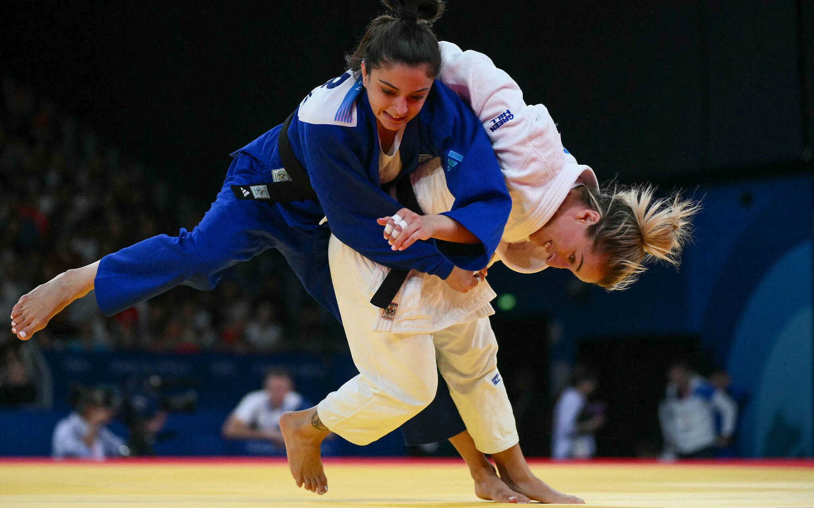
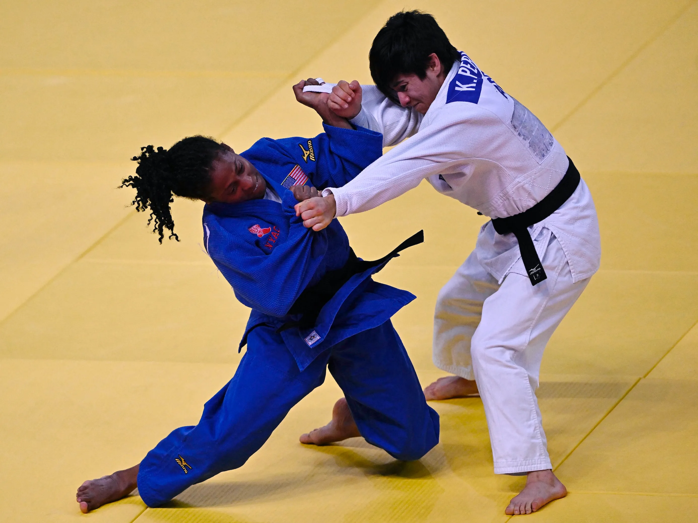
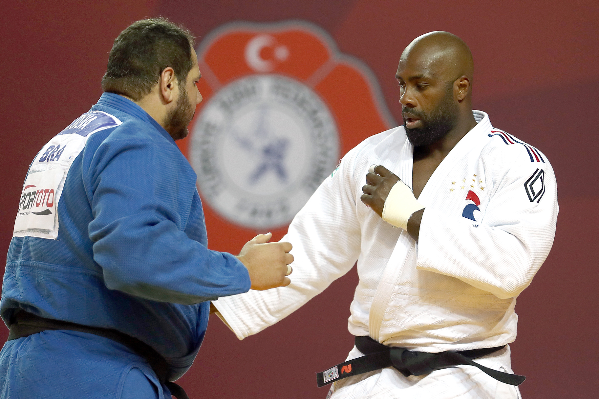

Gallery

SAMPLE PICTURE
Judo Olympics 2024.

SAMPLE PICTURE
Judo Olympics 2024.

SAMPLE PICTURE
Judo Olympics 2024.

SAMPLE PICTURE
Judo Olympics 2024.
Top 20 Ippons - World Judo Tour 2019
Watch the best ippons from the 2019 season. Which is your favourite?
Judo Highlights - Judo For The World Paris 2018
Welcome to judo for the world, which comes to you from the French capital Paris
IJF World Judo Tour - Grand Slam, Prix, Masters & World Championships
Judo Trailer for the World Tour of Grand Slam Grand Slam, Prix, Masters, World Championships. Enjoy!
JUDO Highlights - PARIS GRAND SLAM 15
This Iconic city is the host of one of the most exciting annual judo competitions and a key event in the international judo federation's world tour. The Paris JUDO Grand Slam.